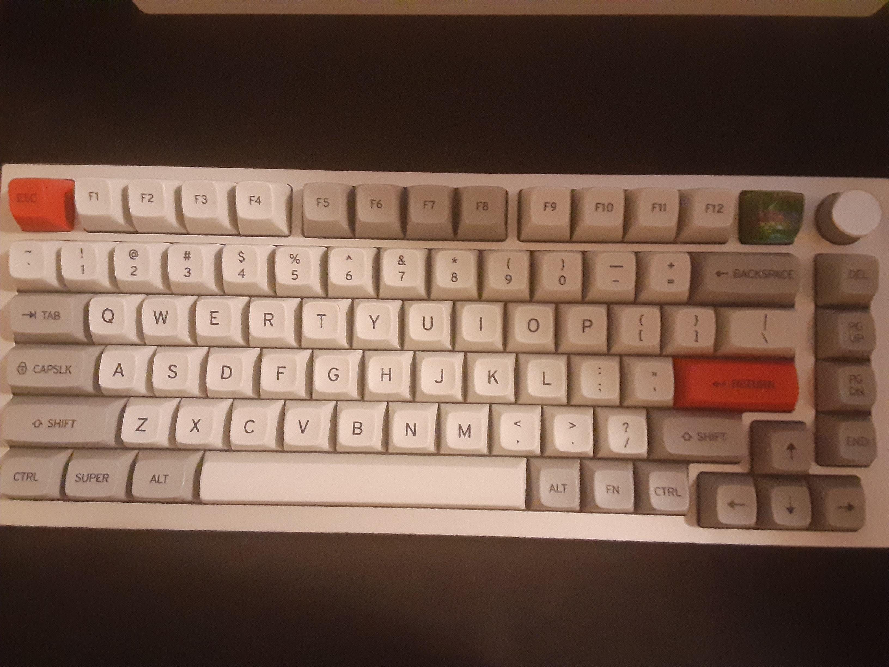
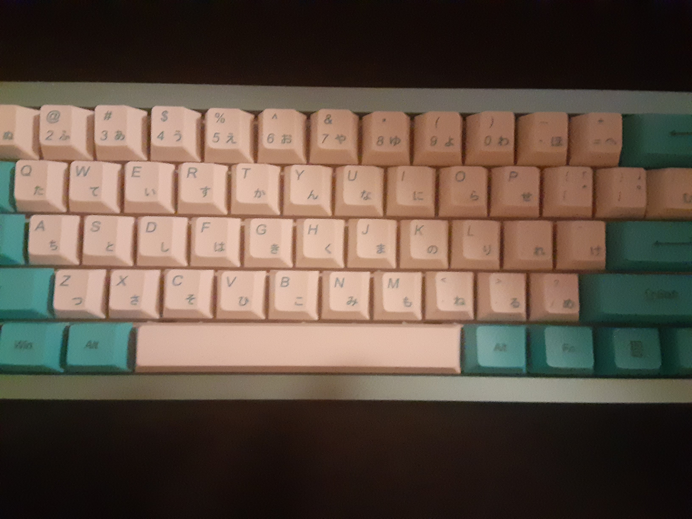
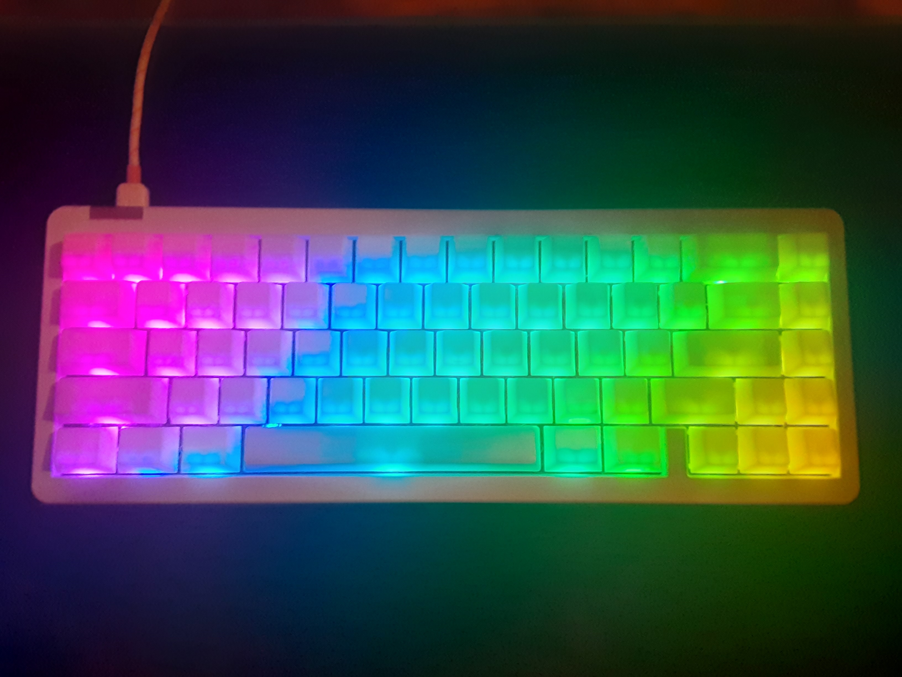

.png)

About Me
Hi there! As a recent graduate with a passion for back-end development, I'm excited to pursue a career in software engineering. During my internship, I was tasked with developing and maintaining the back-end of a complex web application, and I loved every minute of it which solidified my passion for programming. While I appreciate the importance of front-end development, my true passion lies in the back-end, where I can apply my technical expertise to create efficient, scalable, and reliable systems. I'm always eager to learn and take on new challenges, and I work well both independently and as part of a team. I'm excited to bring my skills and enthusiasm to a new opportunity in software development, and I look forward to discussing how I can contribute to your team.
**Through utilizing cutting-edge language technology such as ChatGPT, I have been able to significantly improve the quality of my written content.
My Resume
Jeremiah Richard
ad;klfal;skd@390249023 · https://www.linkedin.com/in/jeremiah-r-7815961a3/ · https://github.com/jrichard5 · https://jrichard5.github.io/
PROFESSIONAL PROFILE
Results-oriented programmer with growing knowledge of Java, Python, HTML, CSS, SQL, C++, and C#. Graduated from Herzing University with a 3.95 GPA and received a Bachelor of Science in Computer Programming. Completed a .NET/C# internship at Rural Sourcing that helped bridge knowledge gaps between college and a work environment. Experienced in problem-solving, implementing new ideas, and process changes with peers. Highly communicative and enjoys working in teams.
EXPERIENCE
- Created a backend API using C# in a team setting with supporting technologies, such as Entity Framework, ASP.NET Core, Fluent Validation, and Swashbuckle.
- Engaged in Scrum ceremonies to turn business requirements into a working solution while refining our development process.
- Conducted research on new technologies and documented findings to increase team knowledge
- Proficient with Git and Jira as collaborative communication tools.
- Routinely clean the premises during off-hours
- Worked autonomously with minimal direction.
- Conducted IT maintenance by creating shares and troubleshooting drivers.
EDUCATION
TECHNOLOGY PROFICIENCIES
- C#
- Java
- SQL
- HTML/CSS
- PHP
- C++
- Python
- Selenium
ACTIVITIES
Enthusiastic about computer gaming with a healthy passion for mathematics. Analyze how things in the real world could be translated to programs using math. Exploring multiple distros of Linux and would love to give back to the programming world by writing open-source code for Linux.
Projects
This
website
and
future
later
projects take time.....which i have nothing but
Extra Facts!
- Internet Foundation (HTML/CSS)
- Computer Networks (Basics of Networking)
- Programming Logic (Java)
- Linux Administration
- Database Concepts and Applications 1 and 2(SQL)
- Object-Oriented Programming 1 and 2 (Java)
- Web Scripting (Javascript)
- Python Programming
- System Administration Scripting (Powershell)
- C# Programming
- Mobile Application Development (Android Studio)
- Software Testing (Selenium)
- Information Technology Project Management
- Business Systems Analysis
- Advanced Web Development (PHP)
- Capstone Project (self-learned REACT for front-end, PHP for back-end)
My internship at Rural Sourcing was one of the most amazing and educational experiences I have ever been apart of. I gained valuable experience in software development and the .NET ecosystem, and explored a range of technologies such as EntityFramework, ASP.NET Web API, xUnit, FluentValidation, and Swagger. I also gained valuable experience in using Jira and Git as collaborative tools with my team of interns, which further enhanced my knowledge of software development practices and teamwork. We also did the scrum ceremonies of sprint planning, daily stand-up, sprint review, and sprint retrospective to help turn requirements into concrete actions. We did one week sprints to consistently practice the scrum ceremonies every week. I was fortunate to be assigned a variety of tasks, during these one week sprints which gave me experience in all the technologies. Before this internship, I questioned whether I was ready for the workload required in a real-world software development position. Thanks to this internship experience, I now feel confident in my ability to learn new technologies and integrate valuable fixes and features into a software development project.
- Unreal Engine (Udemy Course, copyrighted so cannot put on a public GitHub)
- PortSwigger's Academy (Pentesting)
- CompTIA Security+ (https://www.youtube.com/watch?v=9Hd8QJmZQUc)
- Japanese xD
- AWS or Azure(since I like C#)
Projects I want to work on to Learn new things
- This Personal Website
- Add unique Javascript / CSS section to practice web design
- Create a Clean Archiecture Template for a backend (C# + .NET Web API + PostgreSQL + EntityFramework)
- Parse a Japanese to English Dictionary to fill Database with data - (C#)
- Make a notecard application using this data (set of set of notecards)
-
Make a notecard desktop app for Linux that makes it easy to make a notecard
- When browsing web, sometimes I learn I misrememberd, and want to create notecards to help remember
- Sets a timer and currect correct streak for each card
- Uses long term memory research to set timer for correct streak
- This would be a system alot like the website WaniKuni but instead of learning Kanji(Japanese), it is more custom
- Remake this site using REACT (or any hot new tech)
-
Learn how the wallpaper engine KDE plugin works
- Make a plasmoid that shows the pic/wallpaper to understand first step of how the wallpapers work
- Make Android Japanese Notecard App (Mobile/Android Studio)

- Case: GMMK Pro
- Switch: Anubis
- Keycaps: Drop + Matt30 MT3 /dev/tty
- Stabilizers: Durock V2
- Case: Brutal60 Aqua
- Switch: Beapolitan Ice Cream Tactile Switch
- Keycaps: Cherry Profile Blue and White Japanese PBT
- Stabilizers: Durock V2


- Case: IDOBAO ID67
- Switch: Gateron KS-3 Milky Yellow Pro
- Keycaps: POM Jellies
- Stabilizers: Durock V2

Exercises
Since people may not want to deal with random JS effects, I will put these on a separate webpage
Click Here for the Exercise page (not yet)